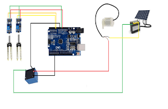
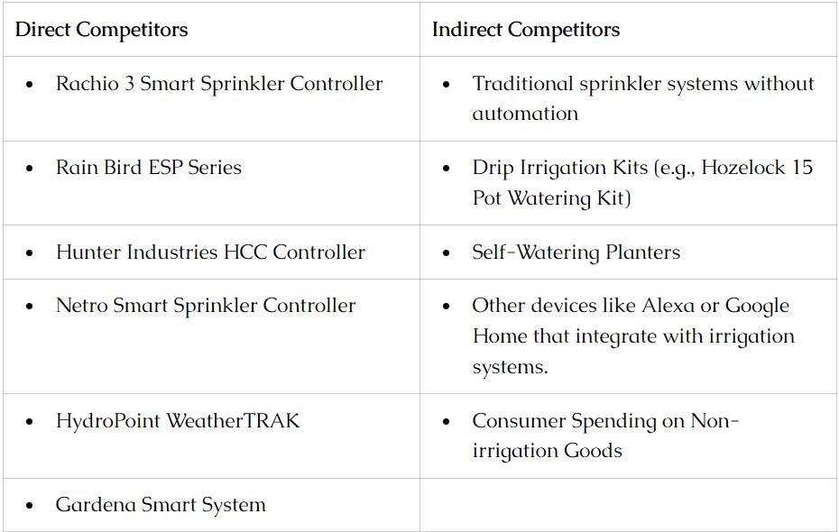

In the world of agriculture, the efficient use of water resources has
always been a priority. With climate change and rising water scarcity,
farmers are increasingly adopting automatic water irrigation systems
to optimize water usage, boost crop yield, and reduce labor. These
systems, equipped with sensors and controllers, enable the precise
distribution of water according to plant needs, ensuring that no water
is wasted. By automating irrigation, farmers can focus on other
critical tasks, monitor water usage remotely, and ensure their crops
get just the right amount of moisture. This modern approach is
transforming agricultural practices, making them more sustainable and
productive.

Arduino Board
Arduino UNO or any compatible model. This acts as the central
controller for the system.
Soil Moisture Sensors
These sensors measure the moisture content of the soil and send
readings to the Arduino.
Water Pump
A 5V or 12V submersible water pump is often used to draw water and
distribute it to the plants.
Our Services
Automated Irrigation System Design
Our expert team specializes in custom-designed automated irrigation
systems tailored to your specific agricultural or gardening needs.
We assess your land, water sources, and crop types to create a
personalized system that maximizes water efficiency and ensures
optimal crop health. Whether it’s for a home garden or large
commercial farms, our design approach is aimed at providing
sustainable and intelligent water management.
Installation and Setup
We offer professional installation and setup services for all types
of automated irrigation systems. From placing moisture sensors and
water pumps to configuring control units like Arduino or commercial
systems, we ensure that every component is properly installed. Our
team will guide you through the setup process, ensuring your system
is fully functional and easy to manage from day one.
Maintenance and Support
We offer comprehensive maintenance and support services to keep your
irrigation system running smoothly year-round. This includes routine
checkups, cleaning, and repairs, as well as technical support for
any issues that arise. Our team is always available to troubleshoot
and maintain your system, extending its lifespan and ensuring
optimal performance.
Smart Integration and Upgrades
Upgrade your irrigation system with smart integration features, such
as remote access, weather-based scheduling, and IoT functionality.
We provide advanced upgrades for existing systems, allowing you to
control and monitor your irrigation setup from anywhere through
mobile apps. Our solutions keep your system in line with the latest
technology trends, enhancing efficiency and convenience.
Join AWAS Community
Sign Up Today
Automatic Water Agri System
how does automatic water irrigation system help in our daily lives?
An automatic water irrigation system can significantly enhance daily
life like saves time and effort
Insights the implementation of automated water irrigation systems
yields substantial advantages for the community by encouraging water
conservation, enhancing agricultural output, and minimizing workforce
demands. In areas where water is scarce, these systems help to
preserve water, cut down on waste, and promote sustainable farming
practices by accurately administering water based on current soil
moisture levels.
REVENUE MODEL FOR SOCIAL & NON -SOCIAL ENTERPRISES
By Mr. Karl Dominic Fajardo
What is a Social Enterprise? A social enterprise focuses on achieving
social or environmental goals while simultaneously generating revenue.
These organizations aim to make a positive impact on society or the
environment.
What is a Non-Social Enterprise? In contrast, non-social enterprises
prioritize profit generation without an inherent focus on social
missions. Their primary objective is financial gain.
Why Revenue Models Matter Revenue models shape the sustainability and
growth potential of any enterprise. They: Guide financial planning.
Influence resource allocation. Drive strategic decision-making.
Without a strong revenue model: Businesses risk failure. For example,
tech startups relying solely on one revenue source often collapse
during market shifts. Key Insight: “Diverse and strategic revenue
streams mitigate risks and sustain operations during market changes.”
Revenue Models in Non-Social Enterprises
Traditional Models: Direct Sales: Selling products/services directly
to customers. Subscription Services: Generating recurring income
through memberships. Pros and Cons: Direct sales offer immediate cash
flow but can be inconsistent. Subscriptions provide stability but
require high customer retention. Innovative Models: Freemium: Offering
basic services for free with paid premium upgrades. Pay-as-you-go:
Pricing based on usage, common in SaaS (Software as a Service).
Reflection: Revenue models are crucial for any enterprise, including
non-social ones like SYNCHRO's AWAS, which focuses on delivering
innovative solutions for automated water management. As a non-social
enterprise, AWAS prioritizes profitability while addressing customer
needs with a cutting-edge product. Insights from traditional and
innovative revenue models highlight potential paths for AWAS to
generate income effectively. For instance, adopting a direct sales
model can provide immediate cash flow, while incorporating
subscription-based features, such as advanced analytics or remote
control functionalities, could create recurring revenue streams.
Market Sizing
Blog 2
Understanding the potential of a product isn’t just about
innovation—it’s about knowing the scale of opportunity it can tap
into. For SYNCHRO’s AWAS, a revolutionary automated water management
system, market sizing is a critical step in defining its impact. By
estimating the total addressable, serviceable, and target market, we
can determine AWAS's growth potential and identify the audience it is
best suited to serve. In this blog, we’ll dive into the numbers,
methodologies, and insights that shape our understanding of AWAS's
market, paving the way for strategic decisions and future success.
Total Addressable Market (TAM)
This represents the global demand for AWAS if everyone who needs it uses it.
Who’s included?
Households, agricultural businesses, and plant enthusiasts worldwide.
Key facts:
The global market for smart irrigation systems was valued at $2.5 billion in 2023 and is growing by 15% per year.
There are 2.5 billion people in cities worldwide who could potentially grow plants or gardens.
Globally, there are 570 million farms that may benefit from automation like AWAS.
Estimate:
About 2 billion plant growers (households + businesses) globally.
Each would spend about $100 per year on an automated watering system.
TAM = $200 billion/year.
Serviceable Addressable Market (SAM)
This is the part of the TAM AWAS that can target only the Philippines.
Who’s included?
Urban households, plant owners, and small-scale farmers in the Philippines.
Key facts:
The population of the Philippines isb (2024).
There are ~20 million urban households.
30% (6 million households) are likely to have plants or gardens.
We estimate 20% of these (1.2 million households) would adopt smart irrigation systems.
Estimate:
Each household spends around ₱5,000 (~$100) per year on AWAS.
SAM = ₱6 billion/year (~$120 million/year).
Serviceable Obtainable Market (SOM) – Mindanao
This is the portion of the SAM in Mindanao that AWAS can realistically achieve in the next 1-3 years.
Who’s included?
Urban households and plant owners in major cities like Davao, Cagayan de Oro, and General Santos.
Key facts:
Mindanao has a population of ~26 million.
There are ~4.5 million urban households.
25% (1.1 million households) have plants or gardens.
Our initial focus is on 10% of this group (~110,000 households).
We expect 10% adoption (~11,000 households) in the early phase.
Estimate:
Each household spends ₱5,000 (~$100) per year on AWAS.
SOM = ₱55 million/year (~$1.1 million/year).
Competitive Analysis of Synchro's AWAS
Blog 3
In the journey to create innovative solutions, understanding the
competition is as vital as perfecting the product itself. For
SYNCHRO’s AWAS, a groundbreaking automated water management system,
competitive analysis provides the insights needed to carve out its
unique place in the market. By examining direct competitors and
identifying gaps in the industry, AWAS aims to not only meet but
exceed expectations, delivering unmatched value to plant enthusiasts
and eco-conscious users alike. Join us as we dive into the competitive
landscape and uncover what sets AWAS apart from the rest.

Direct Competitors These are products and brands offering similar
automated irrigation solutions, competing directly in features,
technology, and target audience: Rachio 3 Smart Sprinkler Controller:
Known for its precise water-saving technology and seamless app
integration, Rachio 3 caters to tech-savvy users. Rain Bird ESP
Series: These controllers are popular for their versatility and
partially automated irrigation features, aimed at residential and
commercial use. Hunter Industries HCC Controller: Designed for
large-scale landscapes, this system integrates advanced automation
features, appealing to professional gardeners. Netro Smart Sprinkler
Controller: Focused on sustainability, Netro offers similar smart
features with an emphasis on environmental impact. HydroPoint
WeatherTRAKA: robust system providing weather-based automation for
high-efficiency irrigation, targeting eco-conscious users. Gardena
Smart System: A complete garden management system that incorporates
irrigation alongside other smart tools for convenience. Indirect
Competitors These alternatives fulfill related needs or address
different aspects of plant care, competing on affordability,
simplicity, or additional functionality: Traditional Sprinkler
Systems: Without Automation Basic systems remain a cost-effective
option for users uninterested in smart technology. Drip Irrigation
Kits (e.g., Hozelock 15 Pot Watering Kit): Ideal for targeted, manual
watering with minimal setup, appealing to small-scale gardeners.
Self-Watering Planters: Convenient and standalone, these solutions
provide plant care on a smaller scale but lack the scalability and
intelligence of AWAS. Other Devices Like Alexa or Google Home: That
Integrate with Irrigation SystemsWhile not designed solely for
irrigation, smart home devices add partial automation for existing
systems. Consumer Spending on Non-Irrigation: GoodsIndirect
competition arises from consumers prioritizing other gardening or
decorative products over irrigation solutions.